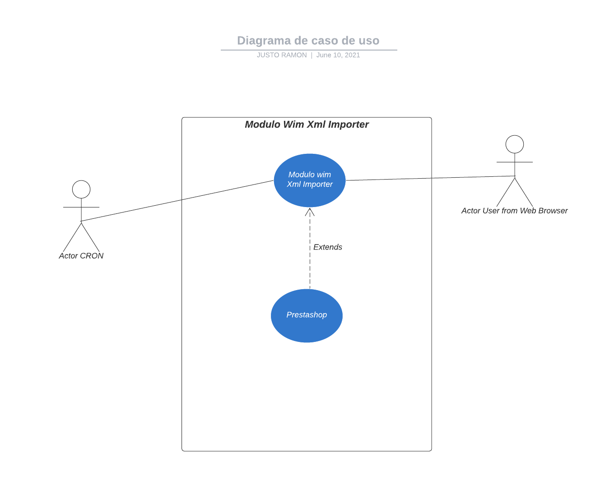
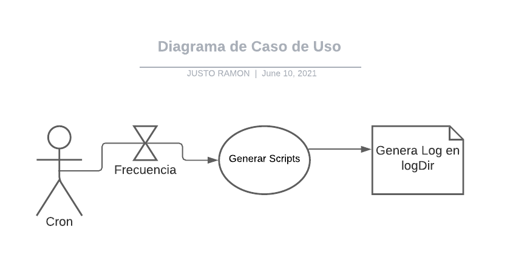
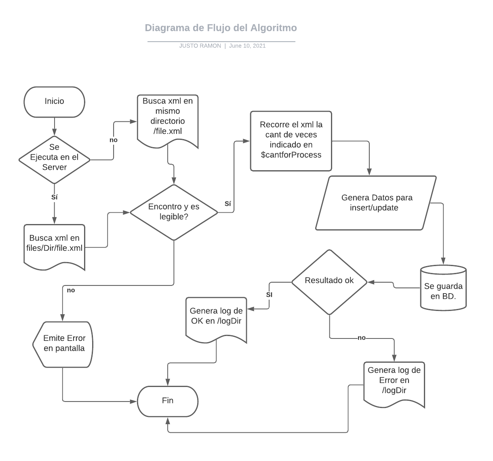

Modulo Wim_partyfiestaxmlimporter
Este modulo importa o actualiza, categorias, productos, precios, stock e imagenes de productos y sus combinaciones, los inserta a la bd de prestashop
Caracteristicas
Puede Importar una cantidad casi ilimitada de Items, ya que los divide en partes, la cantidad de registros que puede importar es manualmente programable Puede integrar los XML que recibe, ya sea en el directorio del script o entro directorio configurable.
- Sin limites
Integre su tienda con cualquier número de mayoristas y proveedores. El importador manejará cada archivo generado correctamente y le permitirá importar datos de manera selectiva desde el archivo a su tienda.
- Universal
Es compatible con los archivos XML generados correctamente. La única condición es que el archivo contenga todos los datos requeridos por PrestaShop; p.ej. un nombre de producto o un código de combinación. No tiene que preocuparse por la versión de la tienda o la actualización planificada. ¡El módulo está preparado para PrestaShop 1.5, 1.6 y 1.7!
- CRON - importaciones sin contacto
El importador genera un enlace para una importación directa (CRON) para cada archivo configurado. Esto permite una automatización completa y al 100% de la importación y la situación en su tienda, sin contacto y durante los días y horas programados. No se preocupe si sus precios e inventarios están actualizados, se ajustarán automáticamente.
- Rápido y flexible
El módulo usa el potencial de su servidor .El módulo también admite archivos de gran tamaño Con cualquier cantidad de elementos para importar / actualizar. ¡La velocidad alcanzada por el importador es de hasta 500 productos por segundo! El rendimiento del importador depende de la potencia del servidor. El módulo funciona en servidores FTP clásicos y en máquinas potentes como VPS Linux y nubes como Google Cloud o AWS.
Instalacion
- Este modulo, no requiere instalacion previa, se ejecuta desde cron o desde navegador
Layout del Modulo
Diagramado UML del Modulo
Diagrama del Caso de Uso General
- Se observa como influye el modulo situado en el ambiente del sistema, cuyos actores pueden ser tanto el cron, como el usuario que acceda desde el navegador

Caso de Uso del modulo especifico
- En este caso se puede observar, que acorde a la frecuencia del cron, se ejecutan los scripts y generan la bitacora de resultados en el directorio /logDir

Diagrama de Flujo Gral del Algoritmo
- El procedimiento y flujo basico del modulo

Informacion Previa
- Todos los scripts generan bitacora, errorlog y algunos que lo requieren un oklog en el directorio /logDir/filename.txt
- Todos los scripts muestran informacion en pantalla de acuerdo a los resultados obtenidos
- Algunos scripts requieren la creacion previa de tablas, el codigo para generar lo tiene cada scripts
- Todos los scripts se ejecutan 1 vez x dia, excepto el 8 y el 10 que lo hacen cada 12 y 14 minutos, recibe 2 xml
Parametros y Configuracion
- El script 4 borra la tabla ps_category_product antes de ser generado, a solicitud del Cliente
- Configurar la variable $ExecInLocalServer = TRUE; //es true si el script se ejecuta en el mismo server donde estan los archivos, no usara ftp
- Lista de directorios donde el script busca por *.xml, si hay mas de 1 lo procesa por orden alfabetico
- Si hay mas de 1000 imagenes nuevas o es una nueva importacion, el script 12, debe correrse en forma incremental de 100 en 100, para no colgar el server
- El script 15 pide parametros, segun el cliente, puede haber hasta 10, formato reference_1.jpg
Directorios y Processed
- $remote_dir1 = '../../files/NavigationTree/'; // Script 1 y 4. el 4 lo pasa a processed
- $remote_dir2 = '../../files/Products/'; //script 2,3, 5 y 6 el 6 lo pasa a processed
- $remote_dir4 = '../../files/ProductRates/'; script 7 y 9, el 9 lo pasa a processed
- $remote_dir3 = '../../files/Inventory/'; // script 8 y 10 el 10 lo pasa a processed
Acceso desde Navegador
La url de acceso desde navegador a los scripts es https://partyfiesta.com/es/es/wim_partyfiestaxmlimporter/